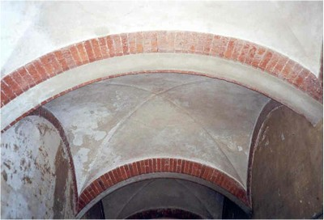
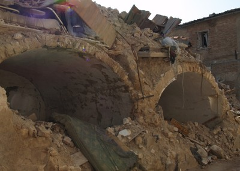

Vaulted masonry [RM1]
Masonry spans between bearing walls and is overlaid with fill. A flat roof surface is provided and is often overlaid with roofing. Includes two-way vaults and masonry domes.

Brick masonry vault (M. Lutman)

Brick masonry double vault, Italy (S. Brzev)

Double vaulted masonry roof, Peru (S. Brzev)

Vaulted masonry roof, Italy (S. Brzev)

Damage to masonry buildings with vaulted masonry roofs in L'Aquila earthquake, Italy (T. Schacher)